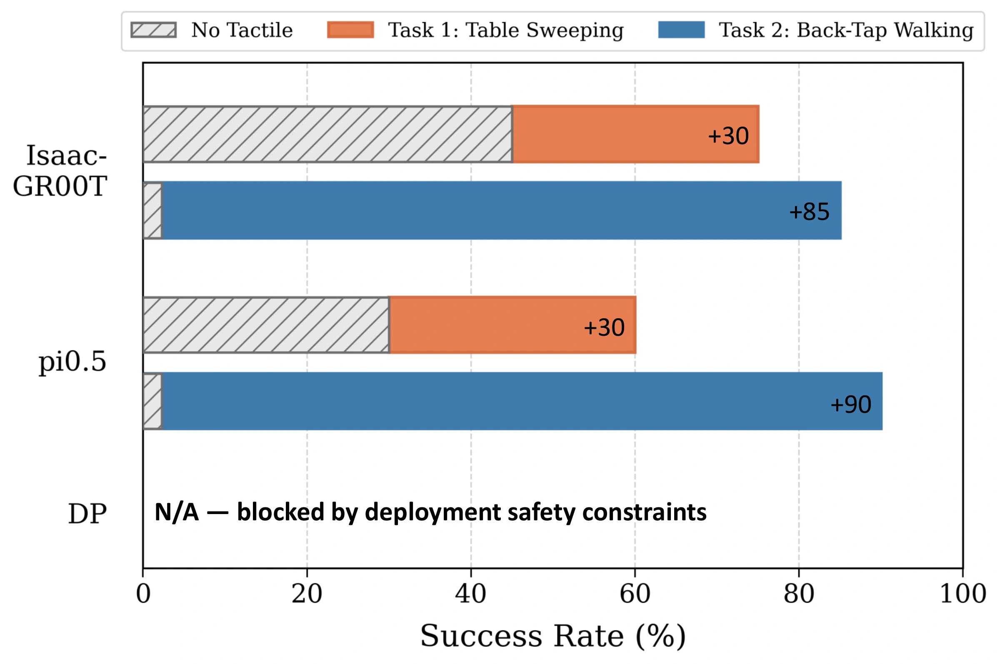
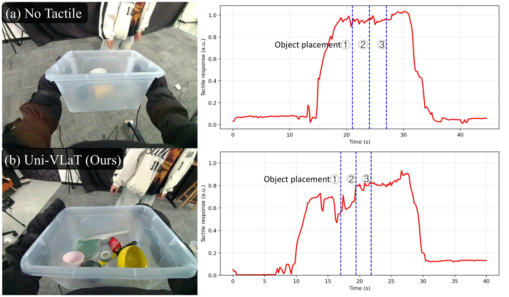

Whole-body tactile encoding
Regional sensor readings become spatial tactile tokens; a short causal history captures contact onset, support, and release.
Whole-Body Tactile Adaptation of VLA Policies for Humanoid Loco-Manipulation
TL;DR Whole-body touch helps pretrained VLA policies react to contact. Uni-VLaT reaches 75% average success across five real-robot tasks, versus 32% without tactile input.
From contact-triggered walking to sustained support and sequential cleanup. Watch each real-robot rollout below.
Vision can miss occluded contact. Proprioception shows how the robot moves, but only indirectly reveals what it touches. Distributed tactile sensing shows where contact happens across the body and how it changes.


Regional sensor readings become spatial tactile tokens; a short causal history captures contact onset, support, and release.
Contextualized tactile features predict future tactile, proprioceptive, and visual representations during training.
The tactile pathway adapts pretrained VLA policies for whole-body actions while retaining their visual and language priors.
Average success rises from 32% without tactile input to 75% with Uni-VLaT. Each task uses 50 demonstrations; the main configurations use 20 real-robot rollouts per task.
“Tactile input” has no prediction objective; “Tactile prediction” predicts only future touch.
Back-Tap Walking is primarily enabled by tactile input: tactile-only prediction reaches 90%, versus 85% for full Uni-VLaT.
Uni-VLaT improves contact-guided sweeping and tactile-triggered walking with both Isaac-GR00T and π0.5.

During Basket Loading, tactile feedback changes as objects are added and the basket is removed. The curve shows the right-arm response around these events.

The trace is from a recorded rollout, in arbitrary ADC units; it is not a calibrated force or aggregate safety measure. No Tactile sensor readings were recorded for analysis only and were not policy inputs.
Average success on Table Sweeping and Back-Tap Walking shows the value of post-policy tactile context and absolute future targets.
Context: Post-DiT tactile states outperform earlier or generic multimodal contexts.
Targets: Predicting absolute future latents preserves sustained contact information better than predicting changes alone.
Full Uni-VLaT reuses the 20-rollout main evaluation; other ablations use 10 rollouts per task.
Physical contact often determines how a humanoid should respond during loco-manipulation, yet vision and proprioception provide only indirect evidence of interaction, especially when the contact region is occluded. Distributed tactile sensing preserves spatially resolved contact patterns across the robot body.
Uni-VLaT adapts pretrained vision-language-action policies with a tactile pathway trained for both action generation and prediction of future tactile, proprioceptive, and visual representations. Contextualized tactile features anchor these complementary views of physical interaction. Across five real-robot tasks, Uni-VLaT achieves 75% average success, compared with 32% for No Tactile and 68% for tactile input without prediction. Evaluation with Isaac-GR00T and π0.5, together with controlled ablations, supports the benefits of post-DiT tactile context and absolute future targets.
Preliminary citation; paper and arXiv identifiers will be added when released.
@misc{wang2026univlat,
title = {Uni-VLaT: Whole-Body Tactile Adaptation of VLA Policies for Humanoid Loco-Manipulation},
author = {Wang, Zihao and Liu, Shutong and Zheng, Siqi and Cao, Liu and Chen, Ruoqi and Liu, Rundong and Yang, Yanchao and Xu, Mengdi},
year = {2026},
note = {Project page: https://ggkiller-air.github.io/Uni-VLaT/}
}